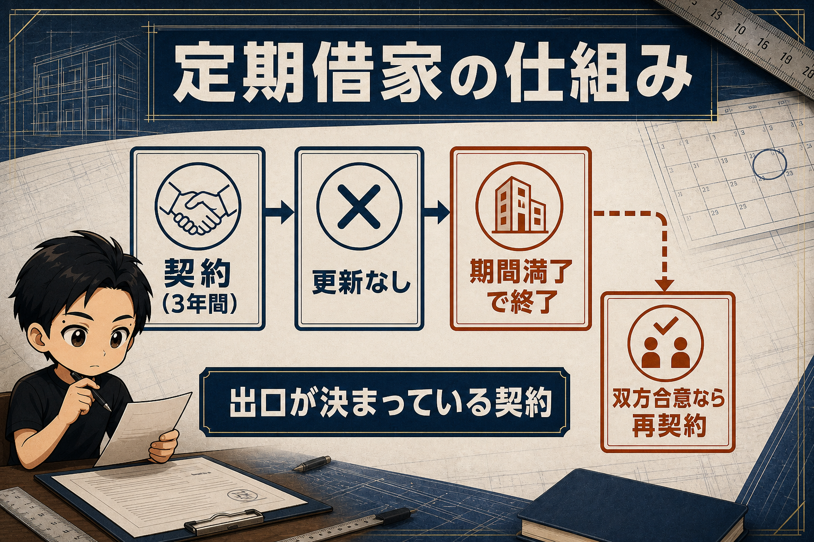
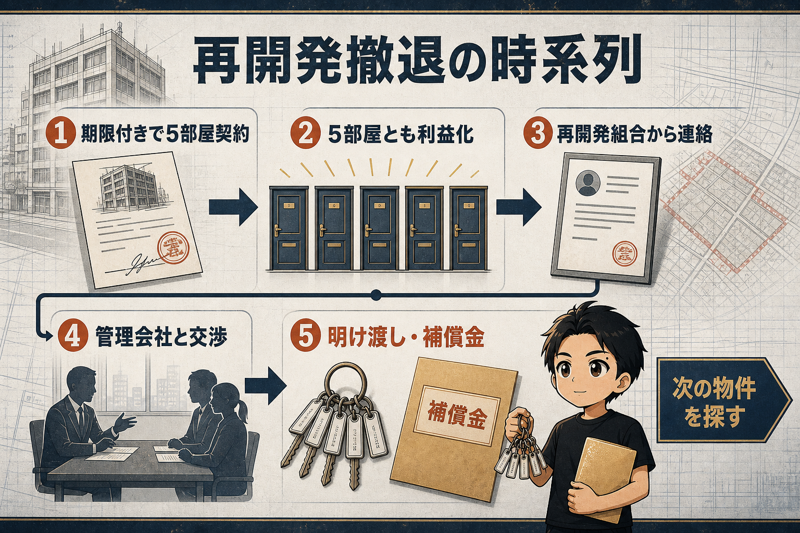

ぼくは5年で23部屋のレンタルスペースを運営して、6部屋を撤退しています。
そのうち5部屋は、同じビルでした。
5部屋で月間の利益は100万円ありました。
撤退の理由は、都市再開発による、ビルの取り壊しです。
5部屋・月利100万円を失うなんて、きつすぎる……。
最初から「取り壊し前提」の物件でした
その物件は、もともと定期借家契約でした。
「再開発があるので、期限付きですよ」という形で紹介された物件です。
期限は3年間。
「期限が来たら、そのまま明け渡してくださいね」
「ビルごと取り壊すので、原状回復は不要。備品を片付けて明け渡すだけでいいですよ」
という契約でした。

定期借家は、契約期間の満了で更新なく終了する契約です。
貸主と借主の双方が合意すれば、再契約することはできます。
制度参考: 国土交通省「定期建物賃貸借」
普通なら、敬遠される条件です。
でも私は、逆にチャンスだと思いました。
この物件は、期限付きであるぶん家賃を抑えられていたからです。
私はそのビルを、5階建てまるごと、5部屋借りました。
結果、5部屋ともしっかり利益が出て、「なんとか再開発がなくならないかな」「もっと遅くならないかな」と思うくらいの稼ぎ頭になりました。
ある日、再開発組合から連絡が来ました
ある時、再開発組合から電話とメールが来ました。
「一度お会いしたい。ビルの明け渡しについて話をしたい」
物件の近くにある再開発組合の事務所に行って、話をしました。
「この時期に明け渡してください」と。
私は定期借家です。
だから「期限どおり明け渡して終わりだろうな、これからどうしよう」と思っていました。
ところが、です。
管理会社さんが、交渉してくれました
最初の面談には、お世話になっている管理会社の方と一緒に行きました。
そこで管理会社の方が、こう言ってくれたんです。
「うちとしては定期借家だけれども、ずっと菊田さんに再契約して貸し続ける予定でした」
そういう形で、かなり交渉をしていただきました。
結果。
定期借家の私でも、立ち退きに伴う補償金を受け取ることができました。
補償の有無や金額は、契約内容や権利関係、交渉の経緯によって変わります。
「定期借家なら必ず補償金が出る」という話ではありません。

補償金の税金の話
もうひとつ、知らなかったことがあります。
立ち退きに伴う補償金は、税務上ひとまとめではありません。
借家権の消滅の対価、休業による減収の補てん、移転費用の補てんなど、名目と性質によって所得区分や課税関係が変わります。
私の場合は、税理士さんに確認した結果、受け取った補償金の大部分が課税対象外として扱われました。
税務の扱いは、契約主体や補償金の内訳によって変わります。必ず税理士などの専門家に確認してください。参考: 国税庁「借家人が受ける立退料」、国税庁「収用等により取得する各種補償金の所得区分」
「利益の先取り」と考える
いい話に聞こえたかもしれませんが、冷静に書きます。
取り壊しは、最初から分かっていたことです。
補償金は、これから稼ぐはずだった利益を、先に渡してもらったようなもの。
だから浮かれずに、その間に新しい物件を見つけて、新しい店舗をオープンする必要があります。
それでも。
撤退にすら、補償金がつくことがある。
レンタルスペースの撤退は、株の損切りとは違います。
話し合いがあって、期間があって、場合によってはお金がついてくる。
「期限付き」「取り壊し予定」の物件は、家賃が安くなることもあり、狙い目になる場合があります。
物件情報でこの文字を見たら、避ける前に、契約期間内の回収見込みと撤退条件を一度考えてみてください。
▼もう1つの副業、AI社員だけのeBay輸出店の実録🐹
https://note.com/cham_ebay
▼ブログ（レンスペ×eBay、全記事まとめ）
https://rental-space.net